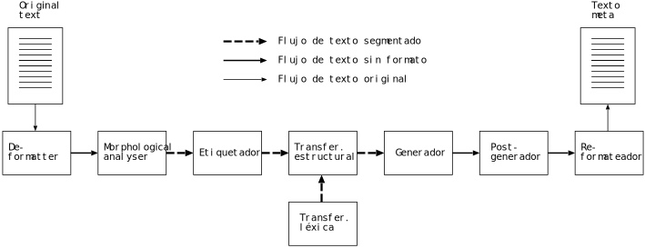

3 Format specification of the data stream between modules
The format of the data that circulate between the engine’s modules has to be specified so that document processing is more effective and transparent. The proposed system design (see Section \ref{ss:descrarq}) imposes the need to use three different data stream types, as shown in figure 1.
The stream format is text-based to facilitate, among other things, the diagnosis of possible system errors, since it is easy to manipulate the stream in order to reproduce the phenomena that are to be tested, and change it to see the result. Other benefits of using text streams are that it is possible to test independently the output of each module, and that it allows for fast building of prototypes to test the system’s global performance, the validity of linguistic data, etc.

Figure 1: Three different data stream types in the machine translation system.
The data stream types are:
Data stream with format: It is the text in its original format, with no further marks: XML, ANSI text, RTF, HTML, etc. Since it is the original format of the documents, nothing needs to be specified about it except the name of the format.
Data stream without format: It is the text with superblanks, that is, with special characters that encapsulate the format (see (part "ss:formato")); superblanks are treated by the linguistic modules as blanks between words (with some exceptions). This is the format generated by the de-formatter and used by the re-formatter when generating the final translated document.
Segmented data stream: In this format, apart from superblanks, lexical units that are to be translated are delimited also with special characters. These characters are put by the morphological analyser and deleted by the generator, which delivers the final surface forms.
We describe next the characteristics of the data stream used between the modules of the translator, that is, the second and the third stream types. In general terms, it is a plain text format marked with characters that have a special meaning. This format is intended for the processing in servers that translate large volumes of text.
Some of the formats that the engine can process may contain extensive
blocks of information in binary format —